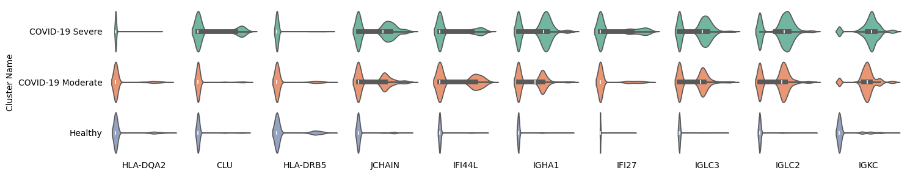

Analysis of Disease-Control Cell Atlas
The dataset contains 49,139 cells from the PBMC and comes from individuals with different severities of COVID-19. Specifically, the dataset includes three disease severity levels: COVID-19 Severe, COVID-19 Moderate, and Healthy. For more details, refer to the description. It is available for free download in h5ad format from the CELLxGENE website via this link: Download Link.
Run CellScope on the Dataset
import requests
import anndata
import CellScope
from scipy.sparse import issparse
import numpy as np
url = "https://datasets.cellxgene.cziscience.com/fbe23743-b3b5-4e2c-9bb2-95ee14d36783.h5ad"
file_path = "COVID-19.h5ad"
response = requests.get(url, stream=True)
if response.status_code == 200:
with open(file_path, "wb") as f:
for chunk in response.iter_content(chunk_size=8192):
f.write(chunk)
adata = anndata.read_h5ad("COVID-19.h5ad")
fea_raw = adata.X
cell_types = adata.obs['cell_type']
label = np.array(cell_types)
fea_raw,fea_log,fea = CellScope.cs.Normalization(fea_raw)
fea_Fitting_1, Signal_Space, Center_index = CellScope.cs.Manifold_Fitting_1(fea)
if issparse(fea_Fitting_1):
fea_Fitting_1 = fea_Fitting_1.toarray()
fea_Fitting_2, fitting_index, index_after_outlier_removal = CellScope.cs.Manifold_Fitting_2(fea_Fitting_1)
T_all_1 = CellScope.cs.GraphCluster(fea_Fitting_1)
T_all_2 = CellScope.cs.GraphCluster(fea_Fitting_2)
Y_1 = CellScope.cs.Visualization(fea_Fitting_1)
Y_2 = CellScope.cs.Visualization(fea_Fitting_2)
CellScope has the ability to identify cell types.
CellScope successfully isolated a cell system primarily composed of classical monocytes, conventional dendritic cells, and non-classical monocytes.
import numpy as np
label_3 = T_all_2[:,3]
index_label_1 = np.where(label_3 == 1)[0]
label_subset = label[index_label_1]
unique_labels = np.unique(label_subset)
total_samples = len(label_subset)
for ii in unique_labels:
count_all = np.sum(label==ii)
count = np.sum(label_subset == ii)
proportion = count / count_all
print(f"Category: {ii}, Sample Count: {count}, Proportion: {proportion:.4f}")
Category: activated CD4-positive, alpha-beta T cell, human - Sample Count: 2 - Proportion: 0.0021
Category: central memory CD4-positive, alpha-beta T cell - Sample Count: 2 - Proportion: 0.0006
Category: classical monocyte - Sample Count: 7874 - Proportion: 0.9948
Category: conventional dendritic cell - Sample Count: 2955 - Proportion: 0.9963
Category: effector memory CD8-positive, alpha-beta T cell - Sample Count: 2 - Proportion: 0.0006
Category: erythrocyte - Sample Count: 46 - Proportion: 0.1565
Category: hematopoietic stem cell - Sample Count: 27 - Proportion: 0.0384
Category: immature neutrophil - Sample Count: 39 - Proportion: 0.9750
Category: lymphocyte - Sample Count: 3 - Proportion: 0.0082
Category: naive thymus-derived CD4-positive, alpha-beta T cell - Sample Count: 2 - Proportion: 0.0004
Category: natural killer cell - Sample Count: 1 - Proportion: 0.0002
Category: neutrophil - Sample Count: 6 - Proportion: 1.0000
Category: non-classical monocyte - Sample Count: 3358 - Proportion: 0.9997
Category: plasmablast - Sample Count: 162 - Proportion: 0.1141
Category: plasmacytoid dendritic cell, human - Sample Count: 30 - Proportion: 0.0232
Category: platelet - Sample Count: 101 - Proportion: 0.0232
Category: transitional stage B cell - Sample Count: 3 - Proportion: 0.0042
Visualization on This System
The visualization results from CellScope on the system not only achieved differentiation at the cellular category level (left, middle, right), but also showed clear distinctions across different disease states (top, middle, bottom).
import matplotlib.pyplot as plt
from sklearn.preprocessing import LabelEncoder
import numpy as np
def plot_encoded_labels(labels, indices, data, ax, title):
encoder = LabelEncoder()
encoded_labels = encoder.fit_transform(labels[indices])
scatter = ax.scatter(data[indices, 0], data[indices, 1], c=encoded_labels, s=1, alpha=1, cmap='viridis')
ax.set_title(title, fontsize=14)
unique_labels = np.unique(labels[indices])
handles = [
plt.Line2D([0], [0], marker='o', color='w',
markerfacecolor=scatter.cmap(scatter.norm(encoder.transform([label])[0])), markersize=5, label=label)
for label in unique_labels
]
ax.legend(handles=handles, title="Classes", loc='best', fontsize=10)
ax.set_xlabel('UMAP 1', fontsize=12)
ax.set_ylabel('UMAP 2', fontsize=12)
return scatter
Label_name = ['classical monocyte','conventional dendritic cell','non-classical monocyte']
index_all = []
for label_name in Label_name:
index_all.append(np.where(label==label_name)[0])
index = np.concatenate(index_all)
index_label_1_inter = np.intersect1d(index,index_label_1)
fig, axes = plt.subplots(2, 1, figsize=(8, 16))
plot_encoded_labels(label, index_label_1_inter, Y_2, axes[0], 'Cell Type')
label_disease = np.array(adata.obs['COVID-19 Condition'])
plot_encoded_labels(label_disease, index_label_1_inter, Y_2, axes[1], 'Disease Label')
plt.subplots_adjust(hspace=0.3)
plt.show()
The identification of marker genes for COVID-19 in the system.
import pandas as pd
import seaborn as sns
from scipy.sparse import issparse
Cluster_Moderate = np.where(label_disease == 'COVID-19 Moderate')[0]
Cluster_Severe = np.where(label_disease == 'COVID-19 Severe')[0]
Cluster_COVID = np.concatenate((Cluster_Moderate,Cluster_Severe))
Cluster_Healthy = np.where(label_disease == 'Healthy')[0]
Cluster_COVID_index = np.intersect1d(index_label_1,Cluster_COVID)
Cluster_Severe_index = np.intersect1d(index_label_1,Cluster_Severe)
Cluster_Moderate_index = np.intersect1d(index_label_1,Cluster_Moderate)
Cluster_Healthy_index = np.intersect1d(index_label_1,Cluster_Healthy)
Gene_Name = adata.var['feature_name']
marker_gene_indices,_ = CellScope.fm.FindMarker(fea_log, Cluster_COVID_index, Cluster_Healthy_index, selected_number = 10, selected_method = 'diff pct')
marker_gene_name = Gene_Name[marker_gene_indices]
celltype_name = label_disease[index_label_1]
fig, axes = plt.subplots(1, len(marker_gene_indices), figsize=(15, 3), squeeze=False)
if issparse(fea_log):
fea_log = fea_log.toarray()
for ii, gene_idx in enumerate(marker_gene_indices):
gene_expression = fea_log[index_label_1, gene_idx].flatten()
data = pd.DataFrame({'Cell Type': celltype_name, 'Gene Expression': gene_expression})
sns.violinplot(
x='Gene Expression', y='Cell Type', data=data, orient='h', hue='Cell Type',
palette='Set2', ax=axes[0, ii], legend=False
)
axes[0, ii].set_xlabel(marker_gene_name[ii])
if ii == 0:
axes[0, ii].set_ylabel('Cluster Name')
else:
axes[0, ii].set_ylabel('')
axes[0, ii].set_yticks([])
for spine in ['top', 'right', 'bottom', 'left']:
axes[0, ii].spines[spine].set_visible(False)
axes[0, ii].tick_params(top=False, bottom=False, left=False, right=False)
axes[0, ii].set_xticks([])
plt.tight_layout()
Among the 10 marker genes identified by CellScope, HLA-DQA2 and HLA-DRB5 show significantly higher expression in both healthy individuals and the COVID-19 moderate group, while the CLU gene is highly expressed in the COVID-19 severe group. The other seven genes exhibit significantly higher expression in the COVID-19 group and lower expression in healthy individuals.
In addition, we plotted the violin plots of these 10 marker genes outside the system and found that the expression differences of HLA-DQA2, CLU, and HLA-DRB5 were not significant, indicating that the marker role of these genes for COVID infection is valid only within the system.
Tree Structured of PBMC
CellScope can generate a hierarchical visualization result plot from two labels, the first of which is based on the hierarchical clustering results of CellScope.
from scipy.sparse import issparse
if issparse(fea_Fitting_1):
fea_Fitting_1 = fea_Fitting_1.toarray()
Y_initial, label_step0, Y_1, Title_1, Y_all, Title_all, index_1, index_all, step0, step1 = CellScope.ts.generate_tree_structured(fea_Fitting_2, T_all_2, step0 = 0, step1 = 17)
CellScope.ts.visualize_tree_structured(Y_initial, label_step0, Y_1, Title_1, Y_all, Title_all, index_1, index_all, step0, step1, T_all_2, save_fig = False, save_path='Res')
CellScope can also color the visualization results based on the severity of COVID-19, with purple representing COVID-19 severe, green representing COVID-19 moderate, and blue representing healthy. Cluster0221 and Cluster0222 are derived from the monocyte dendritic cell system, but Cluster0221 almost exclusively contains COVID-19 patients, while Cluster0222 almost exclusively contains healthy individuals. This indicates that, in this case, the gene expression differences between the diseased and healthy populations are more significant than the expression differences between cell types, which is why CellScope was able to identify this.
label_disease = np.array(adata.obs['COVID-19 Condition'])
encoder = LabelEncoder()
label_numr = encoder.fit_transform(label_disease)
celltype = label_numr.astype(int)
unique_celltypes = np.unique(celltype)
colors = np.random.rand(len(unique_celltypes), 3)
color_map = {label: colors[i] for i, label in enumerate(unique_celltypes)}
colors_array = np.array([color_map[label] for label in celltype])
total_plots = 1 + len(Y_1) + len(Y_all)
n_cols = 3
n_rows = (total_plots + n_cols - 1) // n_cols
figsize = (15, n_rows * 5)
fig, axes = plt.subplots(n_rows, n_cols, figsize=figsize)
axes[0, 0].scatter(Y_initial[:, 0], Y_initial[:, 1], c=colors_array, s=1)
axes[0, 0].set_title('Initial')
axes[0, 0].axis('off')
for ii in range(len(Y_1)):
Y = Y_1[ii]
ax = axes[(ii + 1) // n_cols, (ii + 1) % n_cols]
n_points = len(Y)
point_size = 10 if n_points < 200 else (5 if n_points < 500 else 1)
ax.scatter(Y[:, 0], Y[:, 1], c=colors_array[index_1[ii]], s=point_size)
ax.set_title(Title_1[ii])
ax.axis('off')
for ii in range(len(Y_all)):
Y = Y_all[ii]
ax = axes[(len(Y_1) + ii + 1) // n_cols, (len(Y_1) + ii + 1) % n_cols]
n_points = len(Y)
point_size = 10 if n_points < 200 else (5 if n_points < 500 else 1)
ax.scatter(Y[:, 0], Y[:, 1], c=colors_array[index_all[ii]], s=point_size)
ax.set_title(Title_all[ii])
ax.axis('off')
for ax in axes.flatten()[total_plots:]:
fig.delaxes(ax)
plt.tight_layout()
plt.show()